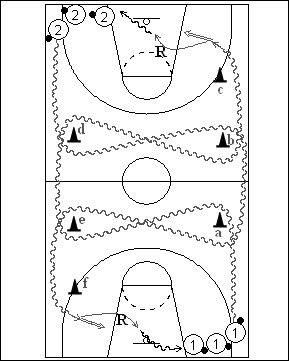

Catégorie : DRIBBLE (Dr-010)
Déroulement
- Deux files de joueurs avec ballons à deux coins opposés du terrain.
- Les premiers joueurs des files 1 et 2 démarrent en même temps. Le premier joueur de la file 1 dribble en contournant les cônes a, e, d, b et c (adversaires, donc protection du ballon) et réalise un lay-up au panneau opposé. Le premier joueur de la file 2 réalise la même chose en contournant les cônes d, b, a, e et f.
- Après son lay-up, le joueur 1 effectue son rebond et va dans la file 2. De même, 2 prend son rebond et va dans la file 1. Les deux joueurs suivants démarrent quand les deux précédents effectuent le lay-up.
Coaching points
- Il s’agit d’une succession de dribbles hauts (rapides) et bas de protection à hauteur de chaque cône.
- On peut ensuite demander un jump shoot à la place du lay-up. Par la suite, on peut aussi jouer le un contre un à chaque panneau (joueur avec ballon contre celui qui a réalisé le circuit en dribble juste avant lui).